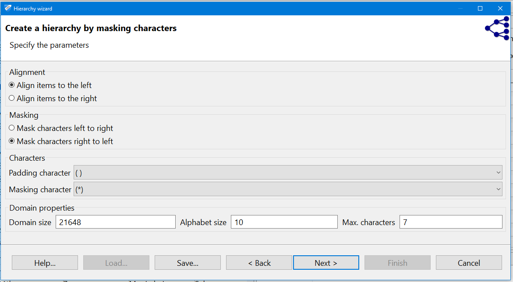

3.3. Creating generalization hierarchies
ARX offers different methods for creating generalization hierarchies for different types of attributes.
Generalization hierarchies created with the wizard are stored as functions, meaning that they can
be created for the entire domain of an attribute without explicitly addressing the specific values in a concrete
dataset. This enables the handling of continuous variables. Moreover, hierarchy specifications can be imported and
exported and they can thus be reused for anonymizing different datasets with similar attributes. It is important
that adequate data types are specified prior to using the wizard. The wizard can be used to create four different
types of hierarchies:
- Masking-based hierarchies: this general-purpose mechanism allows creating hierarchies for a broad
spectrum of attributes.
- Interval-based hierarchies: these hierarchies can be used for variables with a ratio scale.
- Order-based hierarchies: this method can be used for variables with an ordinal scale.
- Date-based hierarchies: this method can be used for dates.
- Priority-based hierarchies: heirarchy can be generated based on frequencies.
Note that ARX deactivates the options that do not suit the selected attribute e.g. for ZIP code, the date is deactivated and can not be selected as shown in the figure above.
3.3.1. Masking-based hierarchies
Masking is a flexible mechanism that can be applied to many types of attributes and which is especially suitable
for alphanumeric codes, such as ZIP codes. The following image shows a screenshot of the
respective wizard:

In the wizard, masking follows a two-step process. First, values are aligned either to the left or to the right.
Then the characters are masked, again, either from left to right, or from right to left. All values are
adjusted to a common length by adding padding characters. This character, as well as the character used
for masking can be specified by the user.
3.3.2. Interval-based hierarchies
Intervals are a natural means of generalization for values with a ratio scale, such as integers or decimals.
ARX offers a graphical editor for efficiently defining sets of intervals over the complete
range of variables having any of the above data types. First a sequence of intervals can be
defined on the left side of the view. In the next step, subsequent levels consisting of groups of intervals from
the previous level can be specified. Each group combines a given number of elements from the previous level. Any sequence of intervals or
groups is automatically repeated to cover the complete range of the attribute. For example, to generalize
arbitrary integers into intervals of length 10, only one interval [0, 10] needs to be defined. Defining a group
of size two on the next level, automatically generalizes integers into groups of size 20. As is shown in the
image (W1), the editor visually indicates automatically created repetitions of intervals and groups.
- First a range should be defined (note that Arx detects lower and higher values automatically e.g. 17 and 91).
The left side (gray color) shows the input and the right side (black color) shows the output.
Interval-based hierarchies might define ranges in which they are to be applied. Any value out of the range
defined by "minimum value" or "maximum value" will produce an error message. This can be used to implement sanity checks.
Any value between the minimal or maximal value and the "bottom coding" or "top coding" values will be top- or bottom-coded.
If values fall into an interval stretching from the bottom coding or top coding limit to the "snap" limit, it
will be extended to the bottom or top coding limit. Within the remaining range intervals will be repeated.
- Define the length of the basic interval: first click on the interval then type the values. Intervals are defined by a
minimum (inclusive) and maximum (exclusive) bound. To be able to create labels for intervals, each element must be associated with an aggregate function.

The following aggregate functions are supported:
- Constant value: returns a predefined-constant value.
- Bounding values: returns the first and last elements of the set.
- Common-prefix: returns the largest common prefix.
- Interval: an interval between the minimal and maximal value is returned.
- Set of values: a set-representation of input values is returned.
- Set of prefixes: a set of prefixes of the input values is returned. A parameter allows defining the length of these prefixes.
- Arithmetic mean: returns the arithmetic mean of the interval values.
- Arithmetic mean of bounds: returns the arithmetic mean of the first and last values.
- Geometric mean: returns the geometric mean of the interval values.
- Geometric mean of bounds: returns the geometric mean of of the first and last values.
Note that if the data type is integer, the mean value is rounded. Clicking on an interval or a group prompts an editor which can be used for specifying the aggreigate function parameters.

- Right click on the interval to add a new level. Groups are defined by their size. The size field controls how many levels can be combined from the previous level. Elements can
be removed, added and merged by right-clicking their graphical representation. :
- Create more levels as needed (in the figure, size 2 is used).
- The heirarchy can be viewd as table.
3.3.3. Order-based hierarchies
Order-based hierarchies follow a similar principle as interval-based hierarchies, but they can be applied to
attributes with ordinal scale. In addition to the types of attributes covered by interval-based hierarchies this
includes strings, using their lexicographical order, and ordinals. First, attributes within the
domain are ordered as defined by the user or the data type. Second, ordered values can be
grouped using a mechanism similar to the one used for interval-based hierarchies. Note that order-based hierarchies are
especially useful for ordinal strings and therefore display the complete domain of an attribute instead of only
the values contained in the concrete dataset. The mechanism can be used to create semantic hierarchies from a
pre-defined meaningful ordering of the domain of a discrete variable. Subsequent generalizations of values from
the domain can be labeled with user defined constants.
An example is to generalize the country attribute into continent or sets of 3 countries. Another example is to genearlize martial status attribute to
spouse present and spouse not present in first level then supress all records in the second levels:
- Order the values in the left side by selecting a value then move it using Move up and Move down buttons. All values that represent spouse present should be on top
- Click on the group then select constant value as an aggreigate function and type "spouse present" in parameter field. Type 2 in the size field (we have only two values where spouse present).
- Right-click on the group and select add after to add a new group. Select constant value as an aggreigate function and type "spouse not present" in parameter field. Type 5 in the size field (we have 5 values where spouse not present)
- Right-click on the first group and select Add new level. Select constant value as an aggreigate function and type "*" in the parameter field. Type 2 in the size field (we will combine the two groups in the first level)
- The heirarchy table should looks like this:
3.3.4. Date-based hierarchies
This wizard supports the creation of hierarchies for dates by specifying the granularity of output data at increasing
generalization levels. Please note that it is important to specify granularity levels that form a hierarchy (e.g.
day-of-week can typically not be followed by week-of-year, because the same day-of-week can be generalized
to different weeks of a year). When this constraint is violated, ARX will raise an error message during the
anonymization process.
When selecting a granularity, the format is detcted automatically. Bottom coding, top coding and Time zone also can be specified.
The granularities are ordered from very detailed (top) to less detailed (bottom). One should start with a less detailed than the original data. Selecting multiple granularities generates multiple levels.
Top coding, bottom coding, and Time zone can also be specified.
Supported granularities:
- Second/minute/hour/day/month/year e.g. removing the smaller parts of the seconds.
- Minute/hour/day/month/year e.g. removing the seconds and smaller part.
- Hour/day/month/year e.g. removing the minutes, seconds and smaller part.
- Day/month/year: e.g. removing the time from date and time format.
- Week/month/year: the first field is the Week of the month assuming Sunday is the first day of the week e.g. 1896-05-25 ARX outputs 5/05.1896
- weak/year: the first field is the Week of the year e.g. 1893-11-12 ARX outputs 46/1893
- Month/year: e.g. 1893-11-12 ARX outputs 11/1893
- Quarter/year: the first field is the quarter of the year e.g. 1893-11-12 ARX outputs Q4/1893
- Day of week: the quarter of the year e.g. 1893-11-12 ARX outputs Q4/1893
- Week of year: the Week of the yeare.g. 1893-11-12 ARX outputs 46
- Quarter of year: the quarter of the year e.g. 1893-11-12 ARX outputs Q4
- Year e.g. 1893-11-12 ARX outputs 1893
- Decade: the decade of the year e.g. 1893-11-12 ARX outputs [1890, 1900[
- Century: the century of the year e.g. 1893-11-12 ARX outputs [1800, 1900[
- Millennium: the millennium of the year e.g. 1893-11-12 ARX outputs [1000, 2000[
In a final step, all wizards show a tabular representation of the resulting hierarchy for the current input dataset.
Additionally, the number of groups on each level is calculated. The functional representation created in the process can be
exported (using File > export heirarchy) and reused for different datasets with similar attributes (using File > import heirarchy).